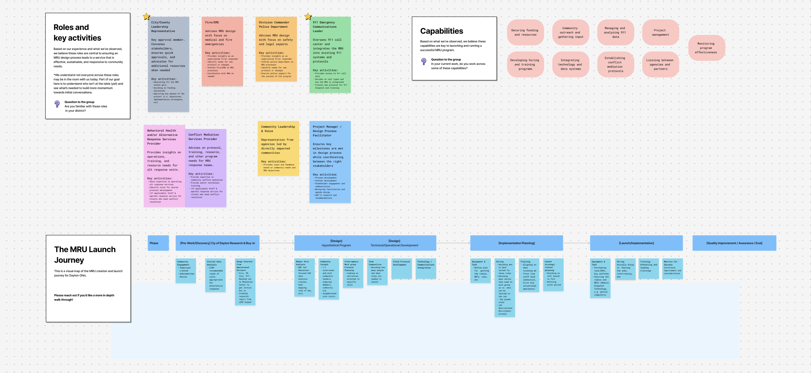

Designing a national toolkit to help communities respond to conflict with mediation instead of police
Dignity Best Practices helped Dayton, Ohio launch the nation's first 911-dispatched Mediation Response Unit. They brought me on to turn two years of that working pilot into a toolkit other cities and counties could use to build their own.
- 5 jurisdictions in the national feedback cohort
- 2 cities now launching with the toolkit
- 15 months follow-on grant funding secured
For Context
When someone calls 911 during a behavioral health crisis or a conflict between neighbors, police are almost always who shows up, even in situations they lack training or resources to handle well. Alternative response is the field of civilian-led programs built to change that, and most of it focuses on mental health and substance use calls. Conflict mediation (interpersonal disputes, noise complaints) was largely missing from that landscape.
In 2021, Dayton, Ohio changed that. Dignity Best Practices helped the city build the first 911-dispatched Mediation Response Unit, proving a civilian mediation team could work inside a real emergency response system. The model was still so new that most cities had never heard of it as an option, let alone how to build one.
Launching a program like this is an orchestration of stakeholders: a city's fire chief, 911 director, police commander, and community organizers all in the same room and moving in the same direction. That's the part DBP asked me to lead.
The Toolkit
The Field Mediation Launch Toolkit is now public and free for any city or county to use.
Process
The theory of change was direct. Dayton had already proven the model worked. The job was taking what one team had built well, mostly through instinct and improvisation, and giving it enough structure that a city that had never done this before could see themselves in it. Every template and process guide in the toolkit came directly from codifying what Dayton's team had already built and proven.
Before anyone could design anything, everyone at the table needed to be looking at the same picture. Half the people in a given session (a fire chief, a 911 director, a community advocate) had never seen the full arc of what launching one of these programs actually requires, so I built that arc first. Using stakeholder mapping, I identified every role that touches an MRU: city and county leadership, fire and EMS, the police division commander, 911 dispatch, behavioral health and alternative response providers, conflict mediators, community voice, and the facilitator role I was filling myself. I mapped each role to the specific capabilities the program requires to function.
Alongside that, I built a journey map of the MRU Launch itself: Dayton's real path from pre-work and discovery through design, build planning, launch, and ongoing quality improvement, broken into the specific activities at each stage. This became the shared reference every session came back to.
Readiness Assessment
From that shared map, I built a readiness assessment framework covering funding clarity, community trust, data access, inter-agency collaboration, and political support. Each lever translated into direct questions a jurisdiction could answer on a simple scale. I ran it as a live survey inside sessions, and the questions ended up doing more work than the assessment itself: they became the conversation.
A city official would rate their CAD data access a 2, and that number would open the real discussion: what's actually blocking access, who owns that data, what would a 4 look like. The assessment did the facilitation work for me.
Those levers held up well enough across sessions that I could trace them straight through to the toolkit itself. I turned the findings into four design principles (user-centered, scalable, evidence-based, and collaborative) that governed every template we built. I kept a direct line from each lever to the template meant to answer it: legal and regulatory questions map to audit trail and risk management templates, resource questions map to budget and staffing templates, community trust maps to the community input plan.
Outcome & Reflection
The five jurisdictions in the Feedback Cohort (Austin/Travis County, Harris County, Tempe, Baltimore, and San Francisco) gave us something more valuable than a launch commitment: clarity on who the toolkit was actually for. These were genuinely the right people to have in the room, engaged, credible, connected to their local systems. What the process surfaced was the gap between interest and readiness to move first, and that gap became one of the clearest findings from the work.
The toolkit launched. It's public now, live on DBP's site as the Field Mediation Toolkit, free for any city or county to use. DBP used it to secure follow-on grant funding, using that same toolkit to directly support Chicago and Iowa City/Johnson County in launching their own field mediation teams.
What started as documentation of one city's process became the foundation DBP is now using to scale to two more. Watching the toolkit do exactly what it was built to do, travel past Dayton, is the clearest evidence the work held up.

What I Learned
This project taught me that the hardest design problem in civic work is alignment. The toolkit itself was straightforward: templates, process guides, assessment frameworks. The real work was getting a fire chief, a 911 director, and a community organizer to see the same picture at the same time.
The deeper lesson was about the difference between interest and readiness. Every jurisdiction in the cohort wanted this to exist. The gap between wanting something and being positioned to move first is where most civic innovation stalls. The toolkit had to meet cities where they actually were.
Along Mentoring Tool
Designing a relationship-building tool that helps teachers and students connect through structured reflection prompts.
Chan Zuckerberg Initiative
Designing digital tools to help empower teachers, school leaders, and young people with data and educational experiences.
Interpublic Group
Bringing collective intelligence to executive decision-making at a global advertising holding company operating in over 130 countries.
XQ Institute
Architecting a national movement to rethink America's high schools. 26 million viewers, 2x supporter growth overnight.